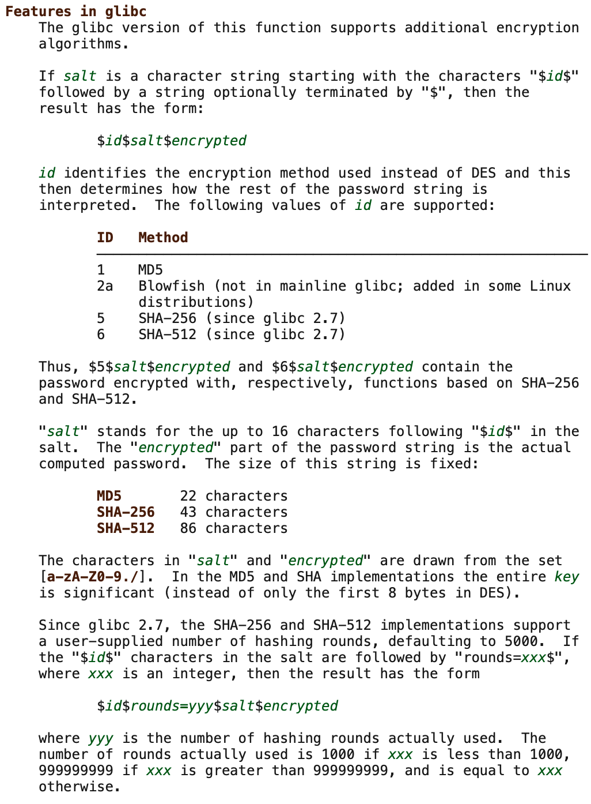
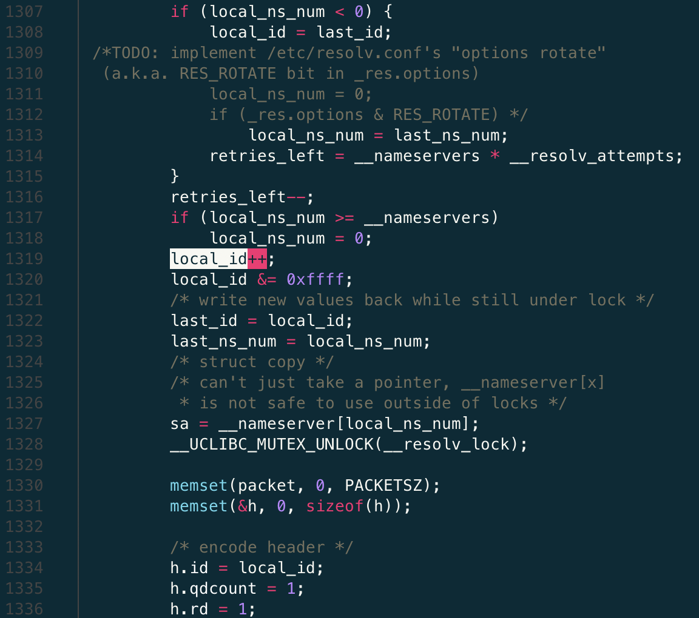
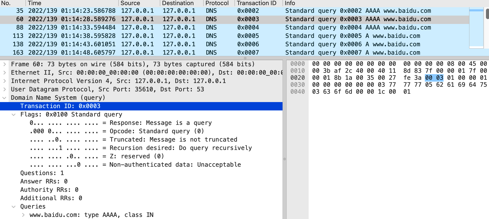
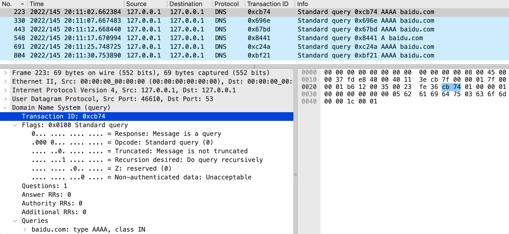

Notes on Using uClibc Standard Library in Embedded Linux System
uClibc is a small and exquisite C standard library for embedded Linux systems. It is widely used in the development of low-end embedded systems and Internet of Things devices. Here are some recent experiences to provide convenience for engineers who need to solve similar problems or meet corresponding requirements.
Introduction to uClibc
uClibc (sometimes written as μClibc) is a small C standard library designed to provide support for embedded systems and mobile devices using operating systems based on the Linux kernel. uClibc was originally developed to support μClinux, a version of Linux not requiring a memory management unit thus especially suited for microcontroller systems. The "uC" in its name is the abbreviation of microcontroller in English, where "u" is a Latin script typographical approximation of the Greek letter μ that stands for "micro".
uClibc is a free and open-source software licensed under the GNU Lesser GPL, and its library functions encapsulate the system calls of the Linux kernel. It can run on standard or MMU-less Linux systems and supports many processors such as i386, x86-64, ARM, MIPS, and PowerPC. Development of uClibc started in 1999 and was written mostly from scratch, but also absorbed code from glibc and other projects. uClibc is much smaller than glibc. While glibc aims to fully support all relevant C standards on a wide range of hardware and kernel platforms, uClibc focuses on embedded Linux systems. It also allows developers to enable or disable some features according to the memory space design requirements.
The following records show the list of C standard library files in two similar embedded systems. The first uses glibc-2.23 version, and the second integrates uClibc-0.9.33.2 version. The total size of glibc library files is more than 2MB, while the uClibc library files add up to less than 1MB. It can be seen that using uClibc does save a lot of storage space.
1 | STM1:/# find . -name "*lib*2.23*" | xargs ls -alh |
IPv6 and Interface API
With the steady growth of IPv6 deployment, adding IPv6 protocol stack support for embedded systems has become necessary. In a software project that adds IPv4/IPv6 dual-stack function to devices using uClibc, it is found that there is an application link error - undefined reference to getifaddrs. getifaddrs() is a very useful function, we can call it to get the address information of all the network interfaces of the system. Query the Linux programming manual:
1 | SYNOPSIS |
The last sentence above is key: only kernels supporting netlink can support address families other than IPv4. The Linux kernel version running on this system is 3.x, which supports netlink. So, could there be a problem with uClibc's support for netlink that causes getifaddrs() not to get compiled?
With this question in mind, search the source code directory of uClibc and find the C file that implements the function getifaddrs():
1 | ... |
Just as expected! The implementation of the entire function and the definition of the associated data structure ifaddrs_storageare are placed under three nested conditional compilation directives with macros defined as
- __ASSUME_NETLINK_SUPPORT
- __UCLIBC_SUPPORT_AI_ADDRCONFIG__
- __UCLIBC_HAS_IPV6__
Therefore, as long as their corresponding configuration lines are opened, the problem should be solved. After changing the configuration file of uClibc as follows, rebuild the dynamic link library of uClibc, then the application can be made successfully:
1 | --- a/toolchain/uClibc/config-0.9.33.2/common |
SHA-2 Hash Function
Embedded systems often need to provide remote SSH login services for system administrators, which requires the creation of system users and their passwords. Linux saves the user name and the hashed password in the /etc/shadow file. The storage format of the hash value follows a de facto standard called the Modular Crypt Format (MCF for short), and its format is as follows:
1 | $<id>[$<param>=<value>(,<param>=<value>)*][$<salt>[$<hash>]] |
Here
- id: indicates the identifier of the hash algorithm (eg 1 for MD5, 5 for SHA-256, 6 for SHA-512)
- param=value: Hash complexity parameters (such as the number of rounds/iterations) and their values
- salt: radix-64 (charset [+/a-zA-Z0-9]) encoded salt
- hash: the radix-64 encoded hash result of the password and salt
With the rapid increase of computing power following Moore's Law, the previously commonly used MD5-based hashing scheme has become obsolete because it is too vulnerable to attack. Newly designed systems are now switched to the SHA-512 hashing scheme, corresponding to $6$ seen in the /etc/shadow file.
Both generation and verification of user password hash values can be implemented with the POSIX C library function named crypt. This function is defined as follows:
1 | char *crypt(const char *key, const char *salt) |
The input parameter key points to the string containing the user's password, and salt points to a string in the format $<id>$<salt> indicating the hash algorithm and salt to be used. Most Linux distributions use the crypt function provided by the glibc library. The following figure summarizes the augmented crypt function in Glibc:

In an embedded Linux system integrating uClibc, uClibc provides support for the crypt function. But the test found that it returned a null pointer for the correct \(6\)
The answer lies in the uClibc's implementation of the crypt function. Find the corresponding C source code:
1 |
|
Aha! It turns out that it only does MD5 hashing by default, and the codes of SHA-256 and SHA-512 need their own conditional compilation macro definitions. This is easy to handle, just edit the configuration file of uClibc and open the latter two.
1 | --- a/toolchain/uClibc/config-0.9.33.2/common |
Finally, take a look at the program that comes with uClibc to test the SHA-512 hash algorithm. It clearly lists the data structures defined by the test code, including the salt, the input password, and the expected output, as well as several test vectors:
1 | static const struct |
It can be seen that the last test case defines the round value 10 ($6$rounds=10$roundstoolow), while the output shows that the round is 1000 (rounds=1000). This confirms that the crypt function implementation of uClibc matches the augmented function of Glibc - in order to ensure security, if the input specified round is too small, crypt will automatically set to the minimum round of 1000.
DNS Security Patch
In early May 2022, Nozomi Networks, a company focused on providing security solutions for industrial and critical infrastructure environments, released a newly discovered uClibc security vulnerability CVE-2022-30295. This vulnerability exists in the Domain Name System (DNS) implementation of all versions of uClibc and its fork uClibc-ng (prior to version 1.0.41). Since the implementation uses predictable transaction IDs when making DNS requests, there is a risk of DNS cache poisoning attacks.
Specifically, applications often call gethostbyname library functions to resolve a network address for a given hostname. uClibc/uClibc-ng internally implements a __dns_lookup function for the actual DNS domain name request and response processing. Taking the last version 0.9.33.2 of uClibc as an example, the screenshot below shows the problematic code in the function __dns_lookup:

Referring to line 1308, at the first DNS request, the variable local_id is initialized to the transaction ID value of the last DNS request (stored in a static variable last_id). Line 1319 is the actual culprit, it simply updates the old local_id value by incrementing it by 1. This new value is stored back into the variable last_id, as shown on line 1322. Finally, on line 1334, the value of local_id is copied into the structure variable h, which represents the actual content of the DNS request header. This code works pretty much in all available versions of uClibc and uClibc-ng prior to version 1.0.41.
This implementation makes the transaction ID in the DNS request predictable, because the attacker can estimate the value of the transaction ID in the next request as long as he/she detects the current transaction ID. By exploiting this vulnerability, an attacker can disrupt/poison the host's DNS cache by crafting a DNS response containing the correct source port and winning the competition with the legitimate response returned by the DNS server, making the network data of the application in the host system be directed to a trap site set by the attacker.
The maintainers of uClibc-ng responded quickly to the announcement of this security vulnerability. They submitted a fix in mid-May 2022, and released version 1.0.41 including this patch at the end of that month. For uClibc, since this C standard library has stopped releasing any new versions since 2012, it is currently in an unmaintained state, so system R&D engineers need to come up with their repair. The following uClibc patches are available for reference:
1 | diff --git a/libc/inet/resolv.c b/libc/inet/resolv.c |
This uClibc patch is a simplified version of the uClibc-ng official patch. Its core is to read a double-byte random number from the system /dev/urandom file, and then use it to set the original local_id, the transaction ID of the DNS request. /dev/urandom is a special device file of the Linux system. It can be used as a non-blocking random number generator, which will reuse the data in the entropy pool to generate pseudo-random data.
Note that in the above patch, the function dnsrand_setup must first check urand_fd whether it is positive, and only open /dev/urandom when it is not true. Otherwise, the file will be reopened every time the application does a DNS lookup, the system will quickly hit the maximum number of file descriptors allowed, and the system will crash because it cannot open any more files.
Finally, a comparison of an embedded system using uClibc before and after adding DNS security patches is given. The following are the DNS packets intercepted by two sniffers. In the first unpatched system, the transaction ID of the DNS request is incremented in sequence, which is an obvious security hole; the second is after the patch is added, the transaction ID of each DNS request is a random value, and the loophole has been filled.
 